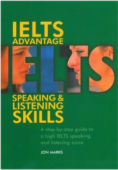

IAIELTS imtihonining Speaking va Listening bo'limlari uchun amaliy qo'llanma.
Ushbu kitob IELTS imtihonining Speaking va Listening qismlaridan yuqori ball olishni istaganlar uchun bosqichma-bosqich amaliy qo'llanma hisoblanadi. Unda turli mavzular bo'yicha foydali so'z boyligi, grammatika qoidalari va imtihon ko'nikmalarini oshiruvchi mashqlar taqdim etilgan.